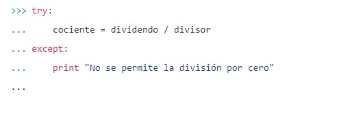

TEMARIO
INTRODUCCIÓN
PROGRAMACIÓN BÁSICA
CONTROLES DE FLUJO
ESTRUCTURAS DE DATOS
PROGRAMACIÓN ORIENTADA A OBJETOS
Manejo de excepciones
Para el manejo de excepciones los lenguajes proveen ciertas palabras reservadas, que nos permiten manejar las excepciones que puedan surgir y tomar acciones de recuperación para evitar la interrupción del programa o, al menos, para realizar algunas acciones adicionales antes de interrumpir el programa.
En el caso de Python, el manejo de excepciones se hace mediante los bloques que utilizan las sentencias try, except y finally.
Dentro del bloque try se ubica todo el código que pueda llegar a levantar una excepción, se utiliza el término levantar para referirse a la acción de generar una excepción.
A continuación se ubica el bloque except, que se encarga de capturar la excepción y nos da la oportunidad de procesarla mostrando por ejemplo un mensaje adecuado al usuario. Veamos qué sucede si se quiere realizar una división por cero:
En este caso, se levantó la excepción ZeroDivisionError cuando se quiso hacer la división. Para evitar que se levante la excepción y se detenga la ejecución del programa, se utiliza el bloque try-except.
Dado que dentro de un mismo bloque try pueden producirse excepciones de distinto tipo, es posible utilizar varios bloques except, cada uno para capturar un tipo distinto de excepción.
Esto se hace especificando a continuación de la sentencia except el nombre de la excepción que se pretende capturar. Un mismo bloque except puede atrapar varios tipos de excepciones, lo cual se hace especificando los nombres de la excepciones separados por comas a continuación de la palabra except. Es importante destacar que si bien luego de un bloque try puede haber varios bloques except, se ejecutará, a lo sumo, uno de ellos.
Como se muestra en el ejemplo precedente también es posible utilizar una sentencia except sin especificar el tipo de excepción a capturar, en cuyo caso se captura cualquier excepción, sin importar su tipo. Cabe destacar, también, que en caso de utilizar una sentencia except sin especificar el tipo, la misma debe ser siempre la última de las sentencias except.
Finalmente, puede ubicarse un bloque finally donde se escriben las sentencias de finalización, que son típicamente acciones de limpieza. La particularidad del bloque finally es que se ejecuta siempre, haya surgido una excepción o no. Si hay un bloque except, no es necesario que esté presente el finally, y es posible tener un bloque try sólo con finally, sin except.
Veamos ahora como es que actúa Python al encontrarse con estos bloques. Python comienza a ejecutar las instrucciones que se encuentran dentro de un bloque try normalmente. Si durante la ejecución de esas instrucciones se levanta una excepción, Python interrumpe la ejecución en el punto exacto en que surgió la excepción y pasa a la ejecución del bloque except correspondiente.
Para ello, Python verifica uno a uno los bloques except y si encuentra alguno cuyo tipo haga referencia al tipo de excepción levantada, comienza a ejecutarlo. Sino encuentra ningún bloque del tipo correspondiente pero hay un bloque except sin tipo, lo ejecuta. Al terminar de ejecutar el bloque correspondiente, se pasa a la ejecución del bloque finally, si se encuentra definido.
Si, por otra parte, no hay problemas durante la ejecución del bloque try, se completa la ejecución del bloque, y luego se pasa directamente a la ejecución del bloque finally (si es que está definido).